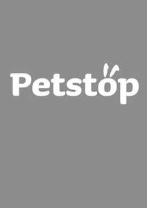

Trade Mark Journal No.2026/011 13 March 2026
UK00004328421 22 January 2026 (20,35,44,45)

International priority date claimed: 24 September 2025
(European Union Intellectual Property Office (EUIPO))
(019251511)
- Class 20
- Animal bedding; beds and baskets; sleeping mats, cushions, mattresses and bedding, all for household pets; pet doors and cat flaps (non-metallic); pet carriers; kennels; pet runs; hutches; cat scratching posts and boards.
- Class 35
- Pet shop retail services and retail services connected with pharmaceutical and veterinary products for animals, fish medicines and treatments, flea collars, flea sprays, flea powders and treatments, tick and worm treatments, pet food, dietary supplements and feed additives for animals, animal bedding, kennels, animal hutches, pet runs, pet doors, cat flaps, dog flaps, animal cages, bird cages, fish tanks, aquariums, animal and pet carriers, clothing for pet animals, books and dvds relating to pet animals, grooming tools for animals and pet animals, collars, leads and tags for pet animals, bowls and placemats for pet animals; the bringing together, for the benefit of others, of a variety of goods, namely pharmaceutical and veterinary products for animals, fish medicines and treatments, flea collars, flea sprays, flea powders and treatments, tick and worm treatments, pet food, dietary supplements and feed additives for animals, animal bedding, kennels, animal hutches, pet runs, pet doors, cat flaps, dog flaps, animal cages, bird cages, fish tanks, aquariums, animal and pet carriers, clothing for pet animals, books and DVDs relating to pet animals, grooming tools for animals and pet animals, collars, leads and tags for pet animals, bowls and place mats for pet animals, enabling customers to conveniently view and purchase those goods from a shop, a catalogue, by mail order, by means of telecommunications, or by means of the internet.
- Class 44
- Veterinary services; animal health testing, screening and monitoring; vaccination services for pet animals; insertion of subcutaneous microchips into pets for the purposes of tracking and identification; pet grooming services; information and advice relating to the welfare of pet animals; information, advisory and consultancy services relating to all the aforesaid services.
- Class 45
- Pet animal passport services.
Petstop Limited
Representative: FRKelly